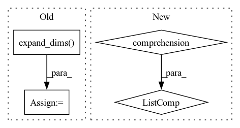

Pattern ID :40384
Before Change
n_candidates = len(item_ids) // len(user_ids)
user_ids = np.expand_dims(user_ids, 1).repeat(n_candidates, axis=1).reshape(-1)
times = np.expand_dims(times, 1).repeat(n_candidates, axis=1).reshape(-1)
history_items = np.expand_dims( history_items, 1) .repeat(n_candidates, axis=1).reshape(-1)
history_times = np.expand_dims(history_times, 1).repeat(n_candidates, axis=1).reshape(-1)
// Find information related to the target item:After Change
break
intervals_lst.append(intervals)
relational_intervals.append(np.stack(intervals_lst, axis=1))
category_ids.append([self.item2cate[x] for x in candidate_lst] )
relational_intervals = np.array(relational_intervals) / self.time_scalar
category_ids = np.array(category_ids)
In pattern: SUPERPATTERN
Frequency: 3
Non-data size: 4
Instances Fragment ID: 114558838
Project Name: thuwangcy/rechorus
Commit Name: 25fac75a3939959fb807d2413754135b9b650fec
Time: 2020-05-19
Author: wangcy18@mails.tsinghua.edu.cn
File Name: src/models/SLRC.py
M Class Name: SLRC
N Class Name: SLRC
M Method Name: get_feed_dict(6)
N Method Name: get_feed_dict(6)
M Parent Class: BaseModel
N Parent Class: BaseModel
M File Name: src/models/SLRC.py
N File Name: src/models/SLRC.py
M Start Line: 77
M End Line: 104
N Start Line: 77
N End Line: 112
Before Change
time = df.loc[:, "t"].iloc[n_lags-1:-n_forecasts].values
// time = pd.DataFrame(time)
time = np.expand_dims( time, axis=1)
// lags = pd.DataFrame(
// [df.loc[:, "y"].iloc[i: i + n_lags].values for i in range(n_samples)]
// )After Change
// time is the time at each forecast step
t = df.loc[:, "t"].values
time = np.array([t[n_lags+i: n_lags+i+n_forecasts] for i in range(n_samples)] )
// if time were to be the present time at forecasting
// time = df.loc[:, "t"].iloc[n_lags-1:-n_forecasts].values Fragment ID: 114558832
Project Name: ourownstory/neural_prophet
Commit Name: 384f1803a758d07de17db9631d9941c4d7a65de3
Time: 2020-05-19
Author: oskar.triebe@merantix.com
File Name: code/make_dataset.py
M Class Name: AnonimousClass
N Class Name: AnonimousClass
M Method Name: tabularize_univariate_datetime(4)
N Method Name: tabularize_univariate_datetime(5)
M Parent Class:
N Parent Class:
M File Name: code/make_dataset.py
N File Name: code/make_dataset.py
M Start Line: 125
M End Line: 176
N Start Line: 152
N End Line: 184
Before Change
image *= 255
image = tf.image.resize(image, input_shape, method=resize_method, antialias=resize_antialias)
if len(image.shape) == 3:
image = tf.expand_dims( image, 0)
if self.rescale_mode == "raw":
return image
elif self.rescale_mode == "raw01":After Change
if input_shape is not None:
self.set_input_shape(input_shape)
images = [image] if len(np.shape(image)) == 3 else image
images = [np.array(Image.fromarray(image).resize(self.input_shape)) for image in images]
images = (np.stack(images) - self.mean) / self.std
images = images if backend.image_data_format() == "channels_last" else images.transpose([0, 3, 1, 2])
return functional.convert_to_tensor(images) Fragment ID: 114558834
Project Name: leondgarse/keras_cv_attention_models
Commit Name: 2f70b0d51c8f2b1f8664f32dc75ecc1001758946
Time: 2023-01-29
Author: leondgarse@gmail.com
File Name: keras_cv_attention_models/common_layers.py
M Class Name: PreprocessInput
N Class Name: PreprocessInput
M Method Name: __call__(5)
N Method Name: __call__(5)
M Parent Class:
N Parent Class:
M File Name: keras_cv_attention_models/common_layers.py
N File Name: keras_cv_attention_models/common_layers.py
M Start Line: 586
M End Line: 601
N Start Line: 609
N End Line: 616